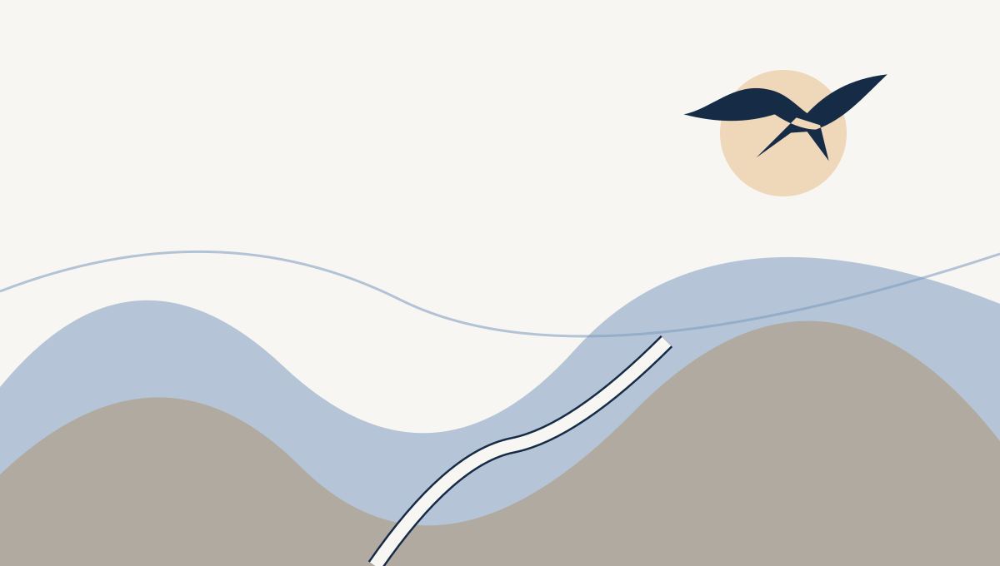

JAY VU. / ABOUT
Tôi không chỉ là công việc mình làm.
Tôi là Jay. Công việc là một phần câu chuyện của tôi, nhưng không phải toàn bộ con người tôi.
Tôi là Jay. Công việc là một phần câu chuyện của tôi, nhưng không phải toàn bộ con người tôi.

Tôi là Jay, hiện sống và làm việc tại TP. Hồ Chí Minh. Ngoài công việc Business Analyst, tôi coi trọng việc phát triển bản thân, những mối quan hệ có ý nghĩa và một cuộc sống có định hướng.
Tôi tin rằng trưởng thành không có nghĩa là phải có sẵn mọi câu trả lời. Đó là việc hiểu mình hơn, chịu trách nhiệm với lựa chọn và tiếp tục học hỏi qua những trải nghiệm.
Tôi yêu thiên nhiên, thích trekking, bơi lội, ghé quán cà phê, khám phá những nơi mới và tìm hiểu văn hóa, ẩm thực. Những khoảng thời gian ấy giúp tôi kết nối lại với thế giới bên ngoài công việc.
Trong công việc, tôi bắt đầu từ Quality Control trước khi chuyển sang Business Analysis vào năm 2018. Hiện tại, tôi tập trung vào Enterprise CRM, hệ thống khách hàng thân thiết và chuyển đổi số. Tôi coi trọng sự rõ ràng trong phân tích, tinh thần hợp tác và giải pháp xuất phát từ nhu cầu vận hành thực tế.
Hiểu điều gì thực sự quan trọng.
Trưởng thành qua lựa chọn và trải nghiệm.
Đối xử tử tế, biết lắng nghe và quan tâm.
Mong người thân được sống nhẹ nhàng và vui vẻ hơn.
Tìm sự cân bằng và cảm hứng từ thế giới xung quanh.